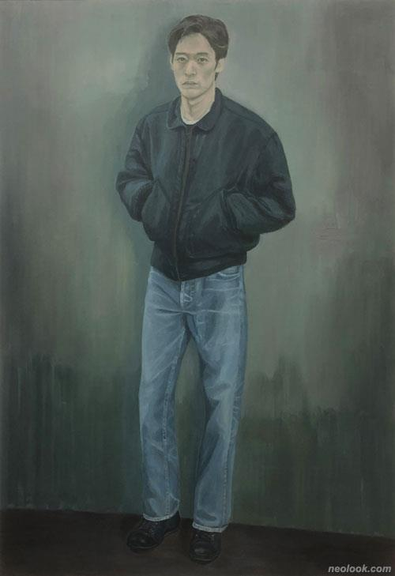
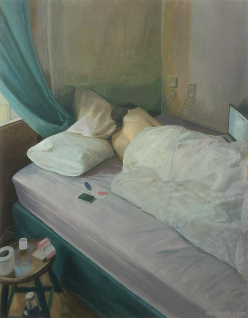

서동욱
무엇을
>>우리가 가장 가깝게 느끼는 내 앞에 있는 그 사람, 그리고 그 사람과의 거리
어떻게
>> 인물들은 회색 톤으로 절제된 색채 뒤로 물러남으로써 가장 익숙한 거리를 낯설게 한다.
이불 속에 얼굴을 파묻은 뒤통수, 정면을 응시하는 회색 눈빛은 아는 누군가를 떠올리게 하지만 정확히 그 사람은 아니다.
왜
>>누군가의 대한 기억, 혹은 향수를 나타내고자 했다. 가장 익숙한 거리에 있지만 회화의 표면 뒤에 있는 인물은 현실과 예술 간에 존재하는 미묘한 긴장을 나타내기 위함이다.

-서동욱_JK_캔버스에 유채_116.7×80.3cm_2021

-서동욱_여름-아침Ⅱ Summer-MorningⅡ_캔버스에 유채_116.7×91cm_2021